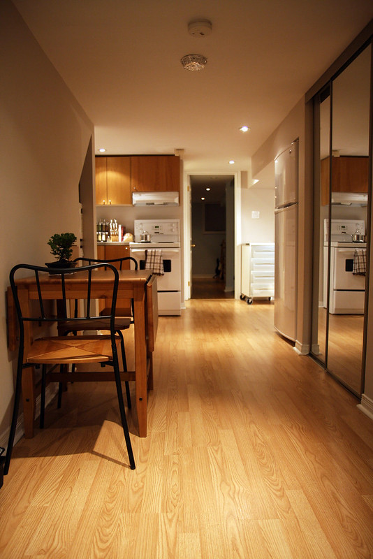

It's quiet and it is also very loud. Jo lives in a 2 bedroom apartment with their roomate, Tank. They have their own system, which is leave each other alone, pay the rent, and then hang out sometimes. This has caused the apartment to either be dead silent, or be blasting various genres of music every weekend at 3am after a night out. It sounds like 'You and I" by Jakob Ogawa during these hours because it's one of Jo's favorites songs.

The town of Bordeaux is just as and also not as interesting.